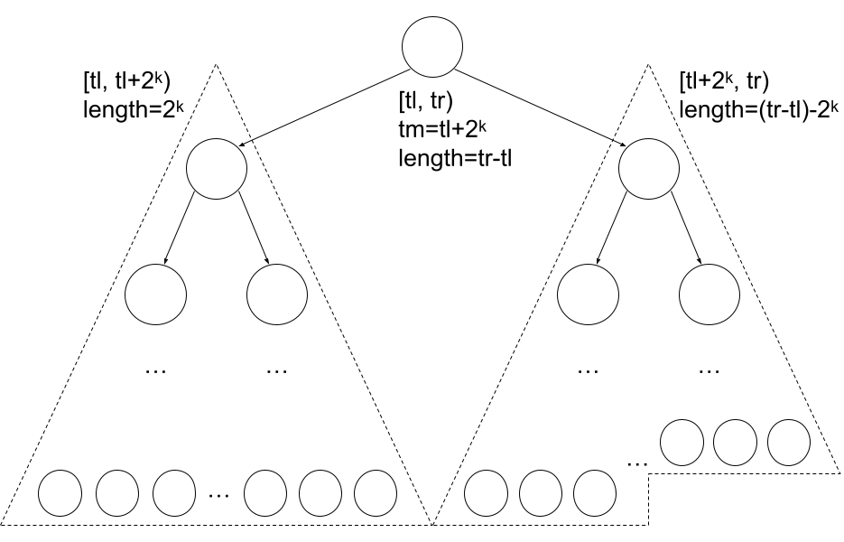
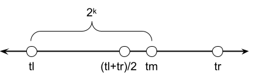
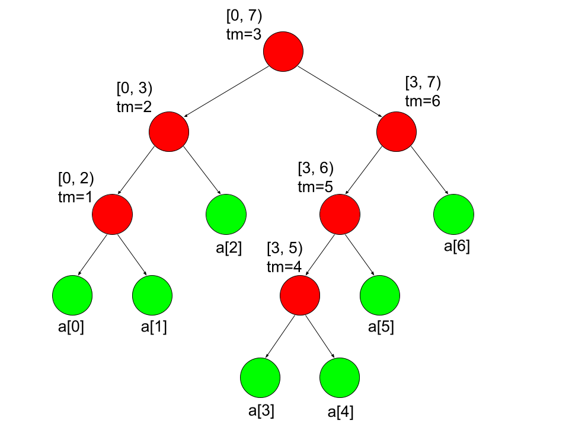

Background
For background about what a segment tree is, I recommend the CP algorithms article.
The standard implementation of a segment tree uses an array \(t\) of size \(4 \cdot n\). This blog discusses 3 different ways how to index the nodes in a segment tree to achieve (optimal) \(2 \cdot n-1\) memory.
why is \(2 \cdot n-1\) optimal?
- A segment tree has \(n\) leaf nodes; 1 for each of the \(n\) elements in the array
- A segment tree is a full binary tree; each internal node has exactly 2 children. Thus there are \(n-1\) internal nodes.
Let's look at the "standard" implementation:
code
const int MAXN = 500'000;
int n;
long long t[4*MAXN];
void build(int a[], int tl=0, int tr=n, int v=1) {
if (tr - tl == 1) {
t[v] = a[tl];
} else {
int tm = (tl+tr)/2;
build(a, tl, tm, 2*v);
build(a, tm, tr, 2*v+1);
t[v] = t[2*v] + t[2*v+1];
}
}
long long query(int l, int r, int tl=0, int tr=n, int v=1) {
if (r <= tl || tr <= l) return 0LL;
if (l <= tl && tr <= r) return t[v];
int tm = (tl+tr)/2;
return query(l, r, tl, tm, 2*v)
+ query(l, r, tm, tr, 2*v+1);
}
void update(int pos, int val, int tl=0, int tr=n, int v=1) {
if (tr - tl == 1) {
t[v] += val;
} else {
int tm = (tl+tr)/2;
if (pos < tm)
update(pos, val, tl, tm, 2*v);
else
update(pos, val, tm, tr, 2*v+1);
t[v] = t[2*v] + t[2*v+1];
}
}
Notes:
- Update: do \(a[pos]\) += \(val\)
- Query: calculate \(\sum\limits_{i=l}^{r-1} a[i]\)
- The node with index \(v\) has inclusive-exclusive range \([tl, tr)\)
- Range \([tl, tr)\) splits into ranges \([tl, tm)\) and \([tm, tr)\)
- Node \(v\) has children \(2 \cdot v\), \(2 \cdot v + 1\), and parent \(\lfloor\frac{v}{2}\rfloor\). This is known as the Eytzinger Layout.
Our approach to optimize the memory will be to take some traversial of the tree, and index the nodes \(0,1,...,2 \cdot n-2\) in order of this traversial. Now there many ways to traverse a binary tree:
- Pre order (dfs)
- In order (dfs)
- Post order (dfs)
- Level order (bfs)
But pre order and post order are symmetrical, so I'll only focus on pre order.
Pre Order
First, the source for the idea for this approach. Now, an example of indexing the pre-order of a full binary tree \(0,1,2,...\)
First for segment trees, a node with range \([tl, tr)\) has subtree size = \[2*(tr-tl)-1\]
how to derive this
- range \([tl, tr)\) contains \(tr-tl\) leaf nodes representing \(a[tl], a[tl+1], ..., a[tr-1]\)
- In a full binary tree, any subtree with \(k\) leaves will have \(k-1\) internal nodes
Observations:
- The root is \(0\)
- A node \(v\)'s left child has index \(v+1\)
- A node \(v\)'s right child has index \(v+1+(\text{size of left subtree}) = v+1+(2 \cdot (tm-tl)-1)\)
So we can code segment trees with \(2*n-1\) memory like:
code
const int MAXN = 500'000;
int n;
long long t[2*MAXN-1];
void build(int a[], int tl=0, int tr=n, int v=0) {
if (tr - tl == 1) {
t[v] = a[tl];
} else {
int tm = (tl+tr)/2;
build(a, tl, tm, v+1);
build(a, tm, tr, v+2*(tm-tl));
t[v] = t[v+1] + t[v+2*(tm-tl)];
}
}
long long query(int l, int r, int tl=0, int tr=n, int v=0) {
if (r <= tl || tr <= l) return 0LL;
if (l <= tl && tr <= r) return t[v];
int tm = (tl+tr)/2;
return query(l, r, tl, tm, v+1)
+ query(l, r, tm, tr, v+2*(tm-tl));
}
void update(int pos, int val, int tl=0, int tr=n, int v=0) {
if (tr - tl == 1) {
t[v] += val;
} else {
int tm = (tl+tr)/2;
if (pos < tm)
update(pos, val, tl, tm, v+1);
else
update(pos, val, tm, tr, v+2*(tm-tl));
t[v] = t[v+1] + t[v+2*(tm-tl)];
}
}
Level Order
Let's take inspiration from the "standard" max-heap implementation:
- It's a complete binary tree
- It uses the Eytzinger Layout (in our case, shifted down by one), thus:
- The root is \(0\)
- node \(v\)'s left child has index \(2 \cdot v+1\), right child has index \(2 \cdot v+2\)
how to derive right child formula
- "shift" up 1
- apply right child formula
- "shift" down 1
- the \(k\) nodes have distinct indexes in range \([0, k-1]\) (this is only true because it's complete). For segment trees, \(k=2 \cdot n-1\)
Let's try to make this indexing layout work for segment trees. Usually for segtrees, each node \(v\) has midpoint \(tm=\lfloor\frac{tl+tr}{2}\rfloor\).
Do you see the problem with this midpoint?
A complete binary tree's left subtree could be much larger that the right; (and for segment trees, the subtree size is proportional to the node's segment length) so the midpoint isn't always exactly in the middle.
Let's split it into 2 cases:
Observe:
- for complete binary trees, either the left or right child's subtree is a perfect binary tree
- for segment trees, if a node \(v\)'s subtree is perfect, then it's range \([tl, tr)\) has length \(=2^k=tr-tl\) for some \(k\)
Let's revisit the cases in more detail.
Here, the left child's subtree is clearly bigger than the right child's subtree, so \[\lceil\frac{tr-tl}{2}\rceil ≤ 2^k ≤ tr-tl\]
Again the left child's subtree is clearly bigger, so \(2^k ≤ \lfloor\frac{tr-tl}{2}\rfloor\).

But how to know which case we're in? And how to know which power of 2? Well it turns out we can just take whichever case gives the smaller midpoint:
int split(int tl, int tr) {
int pow_2 = 1 << __lg(tr-tl);
return min(tl+pow_2, tr-pow_2/2);
}
Note it is no longer the middle of range (e.g. "mid" point), hence the name "split". For a full proof, see my codeforces blog.
We can code segment trees like:
code
int split(int tl, int tr) {
int pow_2 = 1 << __lg(tr-tl);
return min(tl+pow_2, tr-pow_2/2);
}
const int MAXN = 500'000;
int n;
long long t[2*MAXN-1];
void build(int a[], int tl=0, int tr=n, int v=0) {
if (tr - tl == 1) {
t[v] = a[tl];
} else {
int tm = split(tl, tr);
build(a, tl, tm, 2*v+1);
build(a, tm, tr, 2*v+2);
t[v] = t[2*v+1] + t[2*v+2];
}
}
long long query(int l, int r, int tl=0, int tr=n, int v=0) {
if (r <= tl || tr <= l) return 0LL;
if (l <= tl && tr <= r) return t[v];
int tm = split(tl, tr);
return query(l, r, tl, tm, 2*v+1)
+ query(l, r, tm, tr, 2*v+2);
}
void update(int pos, int val, int tl=0, int tr=n, int v=0) {
if (tr - tl == 1) {
t[v] += val;
} else {
int tm = split(tl, tr);
if (pos < tm)
update(pos, val, tl, tm, 2*v+1);
else
update(pos, val, tm, tr, 2*v+2);
t[v] = t[2*v+1] + t[2*v+2];
}
}
In Order
First, the source for the idea for this approach. An example of indexing the in-order of a full binary tree \(0,1,2,...\)
Observations:
- BST-property: for every node \(v\):
- All nodes in \(v\)'s left subtree have index \(<v\)
- All nodes in \(v\)'s right subtree have index \(>v\)
- the total number of nodes is odd; leaves have even indexes; internal nodes have odd indexes (this is only true because it's full)
Proof by induction
Base case 1:
Base case 2:
Now assume \(T1\), \(T2\) are full binary trees. Imagine creating a new full binary tree \(T\) by creating a new root, and setting \(T1\) as the root's left subtree, \(T2\) as the root's right subtree.Denode \(|T|\) as the total number of nodes in \(T\). \(|T| = 1+|T1|+|T2| = 1+odd+odd = odd\)
The root's index = \(|T1|\) = odd
The indexes of nodes in \(T1\) doesn't change.
The indexes of nodes in \(T2\) each increase by \(1+|T1| = 1+odd = even\), so their parody doesn't change.
Let's look at the same tree, with ranges and midpoints included. What can you observe about the midpoints?
Observations:
-
BST-property for midpoints: for an internal node \(v\) with midpoint \(tm\):
- All internal nodes in \(v\)'s left subtree have midpoint \(<tm\)
- All internal nodes in \(v\)'s right subtree have midpoint \(>tm\)
How to derive this
Each internal node \(v\) has:
- range \([tl, tr)\) with \(tr - tl ≥ 2\)
- \(tl < tm = \lfloor\frac{tl+tr}{2}\rfloor < tr\), e.g. the midpoint is strictly inside the range
Each node in \(v\)'s left child's subtree has midpoint strictly inside \([tl, tm)\), so it's \(< tm\). (and similarly for \(v\)'s right child)
- the set of \(n-1\) midpoints (\(tm\)) are distinct, and lie in \([1, n-1]\)
How to derive this
The distinct property follows directly from the above BST-property
Each internal node \(v\) has range \([tl, tr) ⊆ [0, n)\), and its midpoint is strictly inside \([tl, tr)\). So \(0 ≤ tl < tm < tr ≤ n\), so \(0 < tm < n\).
So we have to map the midpoints in \([1, n-1]\) to odd indexes in \([0,2 \cdot n-2]\) with the function \(f(midpoint) = 2 \cdot midpoint-1\) = in-order index
Leaves each have range \([tl, tl+1)\) which we can map to an even index \(2 \cdot tl\). So we can write a function like:
int in_order(int tl, int tr) {
return tr-tl > 1 ? (tl+tr)/2*2-1 : 2*tl;
}
And we can code segment trees like:
code
int in_order(int tl, int tr) {
return tr-tl > 1 ? (tl+tr)/2*2-1 : 2*tl;
}
const int MAXN = 500'000;
int n;
long long t[2*MAXN-1];
void build(int a[], int tl=0, int tr=n) {
if (tr - tl == 1) {
t[in_order(tl,tr)] = a[tl];
} else {
int tm = (tl+tr)/2;
build(a, tl, tm);
build(a, tm, tr);
t[in_order(tl,tr)] = t[in_order(tl,tm)] + t[in_order(tm,tr)];
}
}
long long query(int l, int r, int tl=0, int tr=n) {
if (r <= tl || tr <= l) return 0LL;
if (l <= tl && tr <= r) return t[in_order(tl,tr)];
int tm = (tl+tr)/2;
return query(l, r, tl, tm)
+ query(l, r, tm, tr);
}
void update(int pos, int val, int tl=0, int tr=n) {
if (tr - tl == 1) {
t[in_order(tl,tr)] += val;
} else {
int tm = (tl+tr)/2;
if (pos < tm)
update(pos, val, tl, tm);
else
update(pos, val, tm, tr);
t[in_order(tl,tr)] = t[in_order(tl,tm)] + t[in_order(tm,tr)];
}
}
How to further code golf this
If we switch to inclusive-inclusive ranges (so node \(v\) has range \([tl, tr]\), which splits into ranges \([tl, tm]\) and \([tm+1, tr]\)) then, midpoints are distinct and lie in \([0, n-2]\).
We still map the midpoints in \([0, n-2]\) to odd indexes in \([0,2 \cdot n-2]\) with the new function \(f(midpoint) = 2 \cdot midpoint+1\). And for leaves, we map range \([tl, tl]\) to \(2 \cdot tl\). Our new function is:
int in_order(int tl, int tr) {
return tl != tr ? (tl+tr)/2*2+1 : 2*tl;
}
- Observe \(\lfloor\frac{x}{2}\rfloor \cdot 2+1\) is like setting the least significant bit of \(x\) to 1, so we can replace it with \(x|1\)
- For leaves, \(tl == tr\) so \(2 \cdot tl\) equals \(tl+tr\) which further equals \((tl+tr)|0\)
int in_order(int tl, int tr) {
return tl != tr ? ((tl+tr)|1) : ((tl+tr)|0);
}
Finally, let's combine the cases:
int in_order(int tl, int tr) {
return (tl+tr) | (tl!=tr);
}
This is a way to derive the comment.